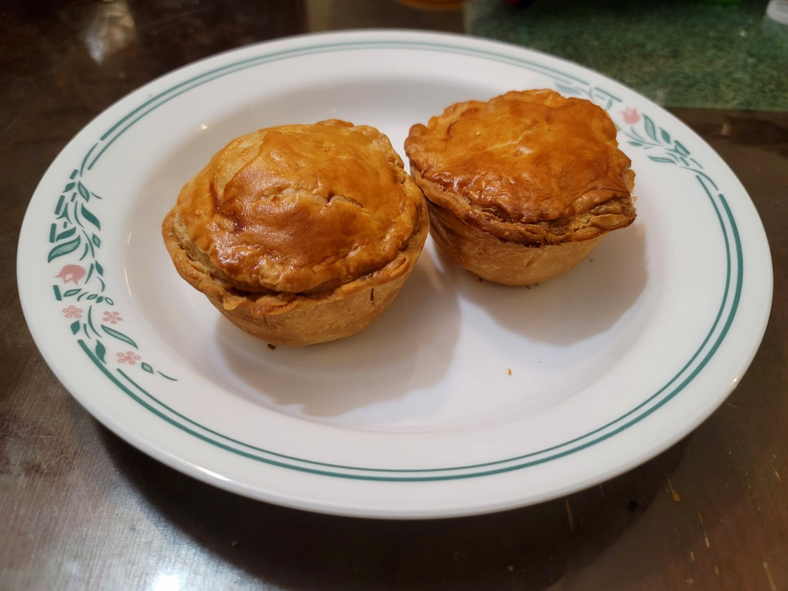

Aussie Meat Pies

Ingredients:
- 1.1 lb Ground beef, at least 90%
- 2 tbsp Olive oil
- 1 Onion, diced
- 2 cloves Garlic, minced
- 1/2 cup Red wine
- 1/2 tsp Nutmeg
- 1/2 tsp Paprika
- 4 Brown button mushrooms, finely chopped
- 2 Carrots, grated
- 2 tbsp Tomato paste
- 1/4 cup Beef stock
- 1 cup Gravy
- Salt or optionally Dark soy sauce, if needed
- 2 sheets Shortcrust pastry
- 2 sheets Puff pastry
- 1 Egg + 1 tbsp Water, whisked together for Egg wash
Instructions:
- Heat the olive oil in a large pan over medium heat. Add in the onion and garlic and sauté until the onion becomes translucent, about 5-7 minutes. Then add in the beef and sauté until fully cooked, 7-10 minutes.
- Add in the wine, nutmeg, and paprika. Stir and let simmer for 5-10 minutes. Then add in the mushrooms and carrots raise the heat to high. Sauté until the mushrooms release their liquid and then continue to cook until almost all the liquid has evaporated, about 7-10 minutes.
- Add the tomato paste, beef stock, and gravy. Sauté until the sauce has reduced and the filling is very thick. It is important for there to not be very much liquid left, or else the pies may turn out soggy. Taste and add salt or dark soy sauce if needed. The dark soy sauce will help give it a nice dark color. Remove from heat and let cool.
- Preheat the oven to about 360 degrees Fahrenheit. Grease a muffin tray.
- Unroll the shortcrust pastry and cut out 12 4.5 inch circles. Use the circles to fill the bases of the muffin tray indents. Make sure that it reaches just slightly above the walls of the indents. Then add filling 3/4 of the way for each pie. Unroll the shortcrust pastry and cut out 12 3 inch circles. Brush egg wash over the edges of the base crust and press the shortcrust pastry circles onto them. Press all around the rims to ensure they are properly sealed.
- Brush over the pies with egg wash. Then poke four ventilation holes into each pie with a toothpick. Place into the preheated oven and bake for about 25 minutes, or until the top crust looks golden.
- Remove from the oven and serve immediately with ketchup, bbq sauce, or worcestershire sauce.